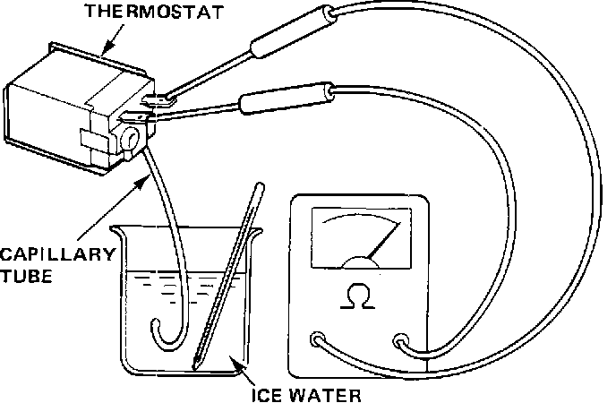

Evaporator Temperature Sensor / Switch: Testing and Inspection
Thermostat Testing:

1. Dip capillary tube in pan of water and check for continuity:
Cut-off: 33 - 33°F (1.5 - 0.5°C)
Cut-in: 37 - 41°F (2.5 - 5.0°C)
2. If cut-off or cut-in temperature is too high or low, replace thermostat.
NOTE: Thermostat switching should be instant, not gradual. It's either "ON" or "OFF."